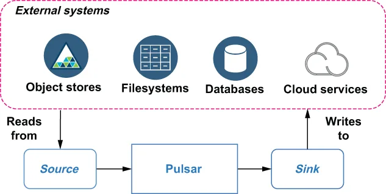

The Pulsar IO connector framework provides developers, data engineers, and operators an easy way to move data into and out of the Pulsar messaging platform without having to write any code or become experts in both Pulsar and the external system. From an implementation perspective, Pulsar IO connectors are just specialized Pulsar functions purpose-built to interface with external systems through an extensible API interface.
Pulsar IO 连接器框架为开发者、数据工程师和运维人员提供了一种便捷的方式，可以把数据搬进和搬出 Pulsar 消息平台，而无需编写任何代码，也不必同时成为 Pulsar 和外部系统两方面的专家。从实现的角度看，Pulsar IO 连接器不过是一些专门化的 Pulsar function，它们被专门打造用来通过一个可扩展的 API 接口与外部系统对接。
Compare this to a scenario in which you had to implement the logic for interacting with an external system, such as MongoDB, inside a Java class that uses the Pulsar Java client. Not only would you have to become familiar with the client interface for MongoDB and Pulsar, but you would also have the operational burden of deploying and monitoring a separate process that is now a critical part of your application stack. Pulsar IO seeks to make the movement of data into and out of Pulsar less cumbersome.
把这和另一种场景对比一下：你必须在一个使用 Pulsar Java 客户端的 Java 类中，自己实现与 MongoDB 这类外部系统交互的逻辑。那样的话，你不仅要熟悉 MongoDB 和 Pulsar 的客户端接口，还要承担部署和监控一个独立进程的运维负担——而该进程如今已成为你应用栈中的一个关键组成部分。Pulsar IO 的目标正是让数据进出 Pulsar 这件事不那么繁琐。

Figure 5.1 Sources consume data from external systems, while sinks write data to external systems.
图 5.1 source 从外部系统消费数据，而 sink 把数据写入外部系统。
Pulsar IO connectors come in two types: sources, which ingest data from an external system into Pulsar, and sinks, which feed data from Pulsar into an external system. Figure 5.1 illustrates the relationship between sources, sinks, and Pulsar.
Pulsar IO 连接器有两种类型：source，它把数据从外部系统摄取进 Pulsar；以及 sink，它把数据从 Pulsar 送入外部系统。图 5.1 展示了 source、sink 与 Pulsar 之间的关系。
5.1.1 sink 连接器
5.1.2 source 连接器
5.1.3 PushSource 连接器